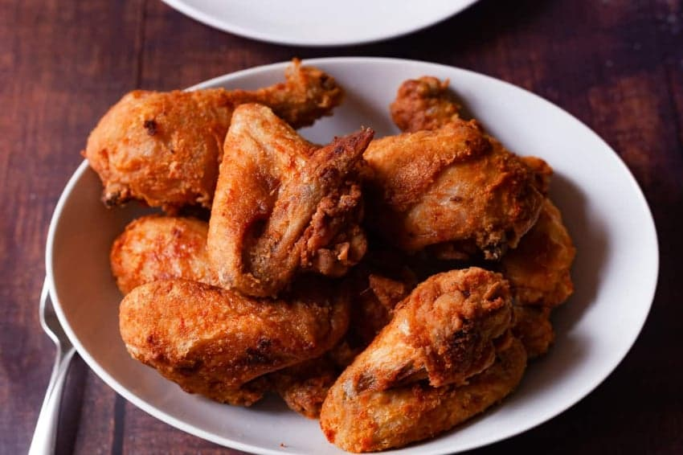
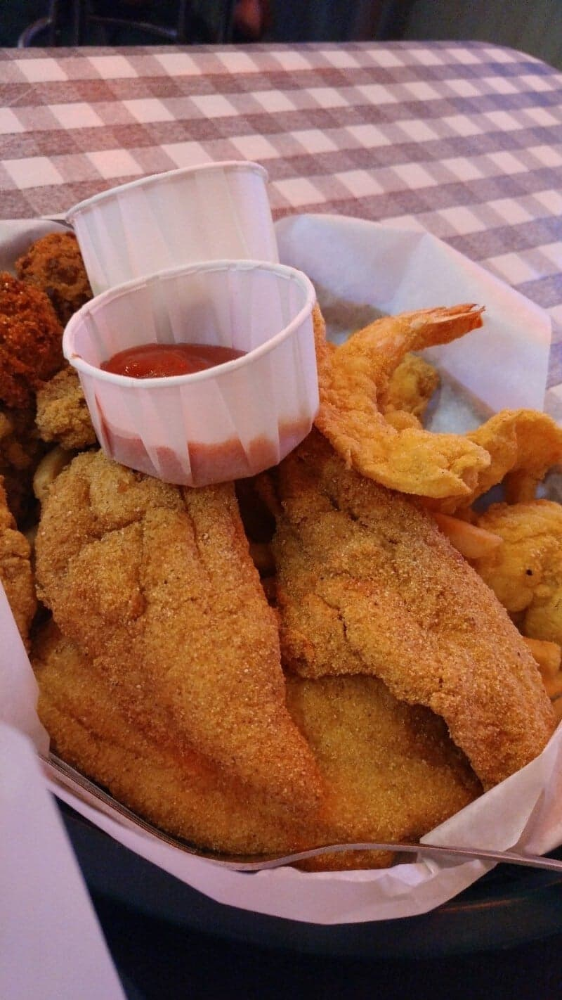
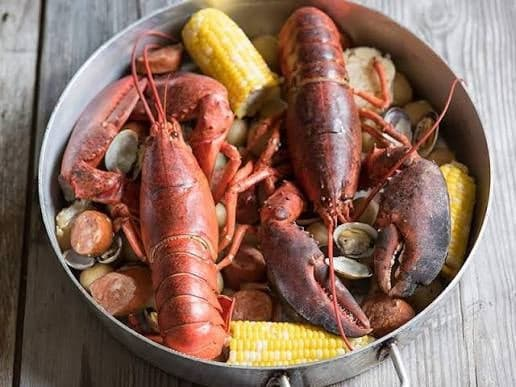
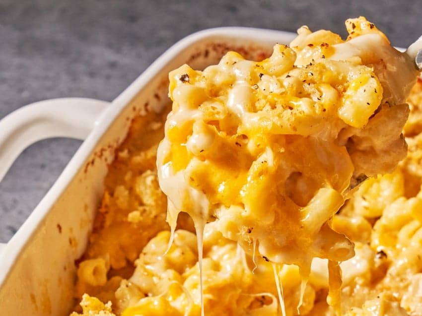
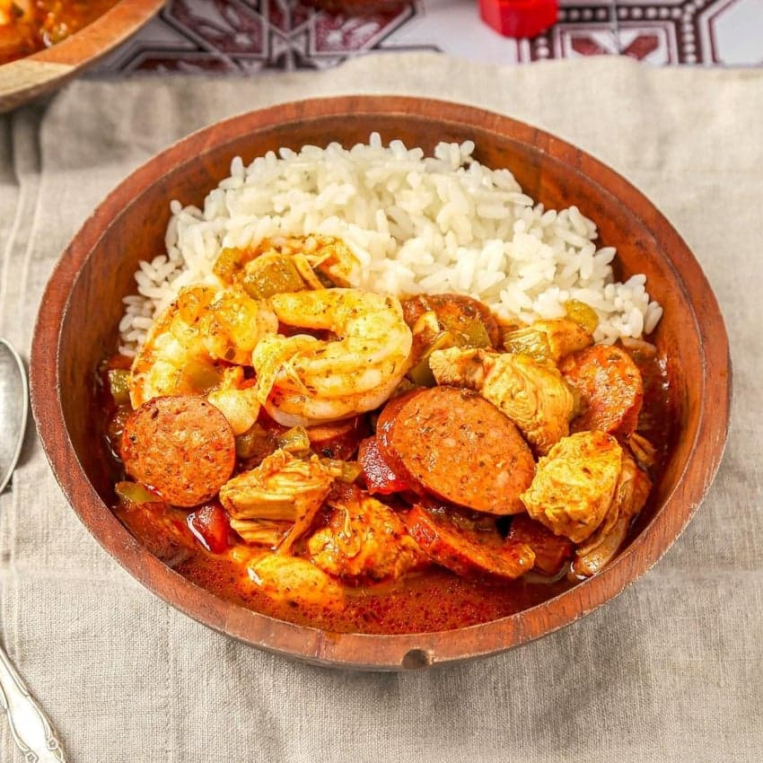
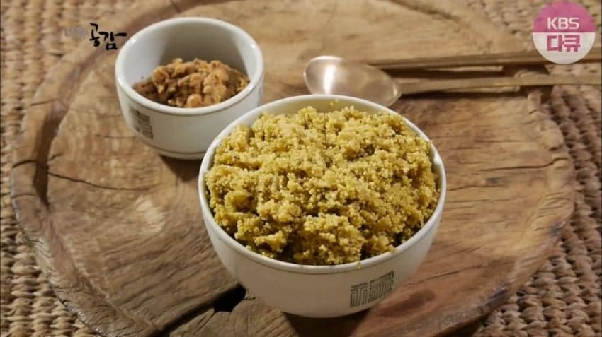
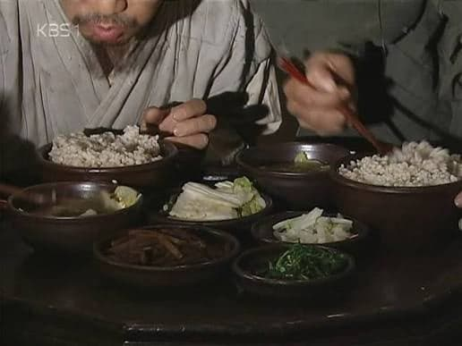

기름에 튀긴 닭 날개,목,허벅지,다리

메기살와 새우 튀김

삶은 바닷가재

맥앤치즈

해물과 육가공류 때려넣어 만든 잠발라야









댓글
수집 당시 댓글 561개
· ㅇㅇ · 11.24 18:54:26
· ㅇㅇ · 11.24 18:55:57
· ㅇㅇ · 11.24 18:57:06
· ㅇㅇ · 11.24 18:58:14
· ㅇㅇ · 11.24 18:59:08
· ㅇㅇ · 11.24 19:00:18
· ㅇㅇ · 11.24 19:01:17
· ㅇㅇ · 11.24 19:01:42
· ㅇㅇ · 11.24 19:02:51
· ㅇㅇ · 11.24 19:04:24
· ㅇㅇ · 11.24 19:04:40
· ㅇㅇ · 11.24 19:05:50
· ㅇㅇ · 11.24 19:06:52
· ㅇㅇ · 11.24 19:07:46
· ㅇㅇ · 11.24 19:08:37
ㅇㅇ · 11.24 17:49:29
· ㅇㅇ · 11.24 20:35:26
히이잉 · 11.24 17:51:15
ㅇㅇ · 11.24 17:51:15
ㅇㅇ · 11.24 17:52:00
ㅇㅇ · 11.24 17:54:10
· ㅇㅇ · 11.24 18:11:05
ㅇㅇ · 11.24 17:54:38
· ㅇㅇ · 11.24 17:55:11
· ㅇㅇ · 11.24 17:55:35
ㅇㅇ · 11.24 17:56:11
· ㅇㅇ · 11.24 18:02:28
· ㅇㅇ · 11.24 18:12:26
ㅇㅇ · 11.24 17:59:43
· ㅇㅇ · 11.24 18:05:22
· ㅇㅇ · 11.24 18:11:45
ㅇㅇ · 11.24 18:04:25
ㅇㅇ · 11.24 18:06:33
ㅇㅇ · 11.24 18:11:51
ㅇㅇ · 11.24 18:16:10
· ㅇㅇ · 11.24 18:16:55
· ㅇㅇ · 11.24 18:17:51
· ㅇㅇ · 11.24 18:19:03
· ㅇㅇ · 11.24 18:19:49
· ㅇㅇ · 11.24 18:21:25
· ㅇㅇ · 11.24 18:25:31
더블알발음은아르르 · 11.24 18:17:34
ㄹ · 11.24 18:21:03
ㅇㅇ · 11.24 18:21:22
ㅇㅇ · 11.24 18:22:02
· ㅇㅇ · 11.24 18:22:36
12 · 11.24 18:23:03
· ㅇㅇ · 11.24 19:08:07
· ㅇㅇ · 11.24 21:31:39
날조의민좆센징 · 11.24 18:23:40
· 날조의민좆센징 · 11.24 18:25:07
· 날조의민좆센징 · 11.24 18:29:36
· 날조의민좆센징 · 11.24 18:29:52
ㅇㅇ · 11.24 18:26:57
ㅇㅇ · 11.24 18:28:20
붉은꼬리보아뱀Ψ · 11.24 18:32:46
ㅇㅇ · 11.24 18:45:59
ㅇㅇ · 11.24 18:50:53
ㅇㅇ · 11.24 18:51:49
ㅇㅇ · 11.24 18:54:35
ㅇㅇ · 11.24 18:54:37
· ㅇㅇ · 11.24 18:54:49
ㅇㅇ · 11.24 18:56:43
· 공정성장 · 11.24 18:59:30
ㅇㅇ · 11.24 19:03:20
ㅇㅇ · 11.24 19:05:03
· ㅇㅇ · 11.24 21:47:11
· ㅇㅇ · 11.24 21:58:59
ㅇㅇ · 11.24 19:05:16
ㅇㅇ · 11.24 19:30:15
ㅇㅇ · 11.24 19:38:58
ㅁㄴㅇ · 11.24 19:42:33
ㅇㅇ · 11.24 19:47:09
ㅇㅇ · 11.24 19:53:59
ㅐ · 11.24 19:59:16
ㅇㅇ · 11.24 20:00:02
ㅇㅇ · 11.24 20:07:55
ㅇㅇ · 11.24 20:09:00
VX · 11.24 20:09:05
ㅇㅇ · 11.24 20:11:19
ㅋㅋ · 11.24 20:16:00
· ㅋㅋ · 11.24 20:16:26
ㅇㅇ · 11.24 20:21:13
ㅇㅇ · 11.24 20:24:46
ㅇㅇ · 11.24 20:30:34
ㅇㅇ · 11.24 20:36:38
· ㅇㅇ · 11.24 21:16:40
· ㅇㅇ · 11.24 21:58:25
ㅇㅇ · 11.24 20:48:04
ㅇㅇ · 11.24 21:17:01
전라
동화
ㅇㅇ · 11.24 21:23:59
ㅇㅇ · 11.24 21:31:58
ㅇㅇ · 11.24 21:34:44
ㅇㅇ · 11.24 21:46:07
ㅇㅇ · 11.24 21:51:40
ㅇㅇ · 11.24 21:54:51
· ㅇㅇ · 11.24 22:00:22
ㅇㅇ · 11.24 21:56:46
ㅇㅇ · 11.24 22:15:32
ㅇㅇ · 11.24 22:16:53
· ㅇㅇ · 11.24 17:44:10
· ㅇㅇ · 11.24 17:45:53
· ㅇㅇ · 11.24 17:46:07
· ㅇㅇ · 11.24 17:50:03
· ㅇㅇ · 11.24 17:53:56
ㅇㅇ · 11.24 17:01:31
· ㅇㅇ · 11.24 17:08:22
· ㅇㅇ · 11.24 17:09:14
· ㅇㅇ · 11.24 21:07:24
ㅇㅇ · 11.24 17:02:14
· ㅇㅇ · 11.24 17:04:02
· ㅇㅇ · 11.24 17:30:13
ㅇㅇ · 11.24 17:04:03
냠븜 · 11.24 17:04:46
ㅇㅇ · 11.24 17:06:29
ㅇㅇ · 11.24 17:06:58
· ㅇㅇ · 11.24 18:26:06
ㅇㅇ · 11.24 17:08:44
· ㅇㅇ · 11.24 17:11:36
· ㅇㅇ · 11.24 17:24:07
ㅇㅇ · 11.24 17:10:41
· ㅇㅇ · 11.24 18:26:59
ㅇㅇ · 11.24 17:11:04
· ㅇㅇ · 11.24 17:12:36
ㅇㅇ · 11.24 17:11:24
· ㅇㅇ · 11.24 18:27:45
· ㅇ ㅇ · 11.24 18:54:07
· ㅇㅇ · 11.24 18:57:32
ㅇㅇ · 11.24 17:11:35
ㅇㅇ · 11.24 17:13:30
ㅇㅇ · 11.24 17:16:53
· ㅇㅇ · 11.24 18:08:44
ㅇㅇ(180.71) · 11.24 17:19:18
ㅇㅇ · 11.24 17:20:04
ㅇㅇ · 11.24 17:21:19
ㅇㅇ · 11.24 17:21:58
· ㅇㅇ · 11.24 17:25:06
· ㅇㅇ · 11.24 18:51:43
ㅇㅇ · 11.24 17:22:12
· ㅇㅇ · 11.24 17:25:21
히이잉 · 11.24 17:23:17
ㅇㅇ · 11.24 17:23:27
ㅇㅇ · 11.24 17:24:45
· ㅇㅇ · 11.24 17:27:11
· ㅇㅇ · 11.24 17:28:29
· ㅇㅇ · 11.24 17:58:46
· ㅇㅇ · 11.24 17:59:48
· ㅇㅇ · 11.24 18:01:00
· ㅇㅇ · 11.24 18:01:27
· ㅇㅇ · 11.24 18:01:33
· ㅇㅇ · 11.24 18:03:45
2456778 · 11.24 17:27:06
2456778 · 11.24 17:27:12
· ㅇㅇ · 11.24 17:41:29
ㅇㅇ · 11.24 17:30:01
· ㅇㅇ · 11.24 17:30:18
· 대한민국인디언 · 11.24 18:26:26
333 · 11.24 17:32:19
333 · 11.24 17:32:28
333 · 11.24 17:32:40
ㅇㅇ · 11.24 17:33:16
ㅇㅇ · 11.24 17:34:17
· ㅇㅇ · 11.24 17:37:15
· ㅇㅇ · 11.24 17:38:10
· ㅇㅇ · 11.24 17:39:04
· ㅇㅇ · 11.24 18:41:24
ㅇㅇ · 11.24 17:36:26
ㅇㅇ · 11.24 17:37:30
· ㅇㅇ · 11.24 17:40:49
· ㅇㅇ · 11.24 17:41:16
· ㅇㅇ · 11.24 17:41:47
· ㅇㅇ · 11.24 18:03:13
· ㅇㅇ · 11.24 18:07:57
· ㅇㅇ · 11.24 19:41:20
제발 · 11.24 17:37:48
ㅇㅇ · 11.24 17:38:53
ㅇㅇ · 11.24 17:39:10
ㅇㅇ · 11.24 17:42:03
· ㅇㅇ · 11.24 17:42:19
· ㅇㅇ · 11.24 17:42:23
· ㅇㅇ · 11.24 18:20:32
ㅇㅇ · 11.24 17:43:34
고탄수 식단 ㄷㄷ
ㅇㅇ · 11.24 17:44:11
ㅇㅇ · 11.24 17:49:05
· ㅇㅇ · 11.24 18:09:48
· ㅇㅇ · 11.24 18:32:12
· ㅇㅇ · 11.24 18:34:32
· ㅇㅇ · 11.24 18:40:30
· ㅇㅇ · 11.24 18:41:36
· ㅇㅇ · 11.24 18:42:17
· ㅇㅇ · 11.24 18:42:57
· ㅇㅇ · 11.24 18:43:05
· ㅇㅇ · 11.24 18:45:54
· ㅇㅇ · 11.24 18:46:55
· ㅇㅇ · 11.24 18:47:35
· ㅇㅇ · 11.24 18:49:48
· ㅇㅇ · 11.24 18:50:54
· ㅇㅇ · 11.24 18:51:46
· ㅇㅇ · 11.24 18:52:00
· ㅇㅇ · 11.24 18:53:36
· ㅇㅇ · 11.24 16:38:29
· ㅇㅇ · 11.24 17:23:20
· ㅇㅇ · 11.24 17:26:04
· ㅇㅇ · 11.24 18:27:50
ㅇㅇ · 11.24 16:26:42
llllllIllllll · 11.24 16:26:55
ㅇㅇ · 11.24 16:27:18
판갤러 · 11.24 16:28:04
미개토인 조선인들 인프라다 깔아주니
노노재팬 반일선동 하면서 통수치는민족
Wasd · 11.24 16:30:23
ㅇㅇ · 11.24 16:31:37
· ㅇㅇ · 11.24 16:35:38
ㅇㅇ · 11.24 16:31:58
· ㅇㅇ · 11.24 17:27:54
· ㅇㅇ · 11.24 17:30:25
ㅇㅇ · 11.24 16:33:10
· ㅇㅇ · 11.24 18:14:38
ㅇㅇ · 11.24 16:33:45
· ㅇㅇ · 11.24 17:21:30
ㅇㅇ · 11.24 16:35:52
· ㅇㅇ · 11.24 16:49:30
· ㅇㅇ · 11.24 17:08:55
닌우르타 · 11.24 16:36:35
ㅇㅇ · 11.24 16:36:49
삭제됨 · 11.24 16:36:59
· ㅇㅇ · 11.24 16:41:42
· ㅇㅇ · 11.24 16:49:44
ㅇㅇ · 11.24 16:37:06
ㅇㅇ · 11.24 16:37:29
ㅇㅇ · 11.24 16:39:03
· ㅇㅇ · 11.24 16:39:21
ㅇㅇ · 11.24 16:39:47
· ㅇㅇ · 11.24 17:14:51
· ㅇㅇ · 11.24 17:15:02
· ㅇㅇ · 11.24 17:37:25
ㅇㅇ · 11.24 16:40:39
ㅇㅇ · 11.24 16:40:54
히이잉 · 11.24 16:41:23
ㅇㅇ · 11.24 16:41:24
· ㅇㅇ · 11.24 18:16:08
· ㅇㅇ · 11.24 18:30:58
ㅇㅇ · 11.24 16:42:16
· ㅇㅇ · 11.24 16:44:06
· ㅇㅇ · 11.24 16:44:08
· ㅇㅇ · 11.24 16:46:49
· ㅇㅇ · 11.24 16:49:15
· ㅇㅇ · 11.24 16:49:51
· ㅇㅇ · 11.24 16:53:30
· ㅇㅇ · 11.24 16:57:46
· ㅇㅇ · 11.24 18:06:56
· ㅇㅇ · 11.24 18:11:21
ㅇㅇ · 11.24 16:44:44
ㅇㅇ · 11.24 16:46:21
ㅇㅇ · 11.24 16:47:23
· ㅇㅇ · 11.24 18:16:46
ㅇㅇ · 11.24 16:48:44
· ㅇㅇ · 11.24 16:49:26
· ㅇㅇ · 11.24 18:17:24
ㅇㅇ · 11.24 16:48:57
ㅇㅇ · 11.24 16:49:22
ㅇㅇ · 11.24 16:49:54
· ㅇㅇ · 11.24 16:50:10
· ㅇㅇ · 11.24 16:55:35
· ㅇㅇ · 11.24 17:13:52
· ㅇㅇ · 11.24 17:17:41
ㅇㅇ · 11.24 16:50:52
· ㅇㅇ · 11.24 16:51:25
ㅇㅇ · 11.24 16:53:22
· ㅇㅇ · 11.24 18:18:43
ㅇㅇ · 11.24 16:53:39
ㅇㅇ · 11.24 16:54:30
· ㅇㅇ · 11.24 19:15:09
ㅇㅇ · 11.24 16:55:57
· ㅇㅇ · 11.24 18:19:10
ㅇㅇ · 11.24 16:56:02
ㅇㅇ · 11.24 16:57:12
ㅇㅇ · 11.24 16:57:41
ㅇㅇ · 11.24 16:57:42
ㅇㅇ · 11.24 16:57:44
ㅇㅇ · 11.24 16:58:12
· ㅇㅇ · 11.24 16:59:13
· ㅇㅇ · 11.24 17:02:59
· ㅇㅇ · 11.24 17:03:31
· ㅇㅇ · 11.24 17:04:20
· ㅇㅇ · 11.24 17:06:33
· ㅇㅇ · 11.24 17:16:29
· ㅇㅇ · 11.24 17:17:30
· ㅇㅇ · 11.24 17:17:34
· ㅇㅇ · 11.24 17:18:27
· ㅇㅇ · 11.24 17:20:05
· ㅇㅇ · 11.24 17:20:40
· ㅇㅇ · 11.24 17:26:33
· ㅇㅇ · 11.24 17:28:40
· ㅇㅇ · 11.24 17:29:39
· ㅇㅇ · 11.24 17:33:38
· ㅇㅇ · 11.24 17:33:49
· ㅇㅇ · 11.24 17:34:58
· ㅇㅇ · 11.24 17:35:45
· ㅇㅇ · 11.24 17:38:36
· ㅇㅇ · 11.24 17:39:14
· ㅇㅇ · 11.24 17:41:13
· ㅇㅇ · 11.24 17:30:41
· ㅇㅇ · 11.24 17:40:39
· ㅇㅇ · 11.24 17:42:38
· ㅇㅇ · 11.24 17:44:04
· ㅇㅇ · 11.24 17:47:10
· ㅇㅇ · 11.24 17:48:56
· ㅇㅇ · 11.24 17:50:08
· ㅇㅇ · 11.24 17:51:28
Hololive만본다 · 11.24 16:05:03
ㅇㅇ · 11.24 16:05:04
히이잉 · 11.24 16:05:19
ㅇㅇ · 11.24 16:05:32
백성
절반
· ㅇㅇ · 11.24 16:05:47
노예
인
· ㅇㅇ · 11.24 16:06:05
개병신
조센
ㅇㅇ · 11.24 16:05:34
ㅇㅇ · 11.24 16:05:38
ㅇㅇ · 11.24 16:05:50
ㅇㅇ · 11.24 16:06:05
· ㅇㅇ · 11.24 16:11:46
· ㅇㅇ · 11.24 16:14:42
· ㅁㄴㅇ · 11.24 16:24:03
· ㅁㄴㅇ · 11.24 16:25:38
· ㅇㅇ · 11.24 16:32:10
· ㅇㅇ · 11.24 16:36:28
· ㅇㅇ · 11.24 16:38:41
· ㅇㅇ · 11.24 16:41:24
· ㅇㅇ · 11.24 16:43:49
· ㅇㅇ · 11.24 16:45:08
· ㅇㅇ · 11.24 16:45:35
· ㅇㅇ · 11.24 16:59:19
ㅇㅇ · 11.24 16:06:14
ㅇㅇ · 11.24 16:06:31
ㅇㅇ · 11.24 16:07:07
· ㅇㅇ · 11.24 16:07:51
· ㅇㅇ · 11.24 16:43:20
· ㅇㅇ · 11.24 18:42:32
ㅇㅇ · 11.24 16:07:13
· ㅁㄴㅇ · 11.24 16:13:42
ㅇㅇ · 11.24 16:08:39
· ㅇㅇ · 11.24 16:42:51
· ㅇㅇ · 11.24 16:46:29
ㅇㅇ · 11.24 16:08:44
ㅇㅇ · 11.24 16:08:48
· ㅇㅇ · 11.24 16:56:07
· ㅇㅇ · 11.24 18:25:00
ㅇㅇ · 11.24 16:09:28
ㅇㅇ · 11.24 16:09:47
봇치쟝 · 11.24 16:11:00
· ㅇㅇ · 11.24 16:56:32
ㅇㅇ · 11.24 16:11:14
ㅇㅇ · 11.24 16:11:33
ㅅㅂ · 11.24 16:12:19
· ㅇㅇ · 11.24 16:18:45
· ㅇㅇ · 11.24 18:26:47
ㅇㅇ · 11.24 16:12:19
ㅇㅇ · 11.24 16:13:03
· ㅇㅇ · 11.24 16:13:09
ㅇㅇ · 11.24 16:13:40
· ㅇㅇ · 11.24 17:02:46
ㅇㅇ · 11.24 16:14:16
· ㅇㅇ · 11.24 16:16:03
· ㅇㅇ · 11.24 16:18:57
ㅅㅂ · 11.24 16:14:29
ㅇㅇ · 11.24 16:15:24
ㅇㅇ · 11.24 16:16:48
ㅇㅇ · 11.24 16:16:53
· ㅇㅇ · 11.24 16:35:26
ㅇㅇ · 11.24 16:17:50
ほうれんそう · 11.24 16:17:53
· ㅇㅇ · 11.24 17:00:17
ㅇㅇ · 11.24 16:18:25
· ㅇㅇ · 11.24 16:20:05
· ㅁㄴㅇ · 11.24 16:21:53
· ㅇㅇ · 11.24 16:24:54
· ㅇㅇ · 11.24 16:26:01
· ㅁㄴㅇ · 11.24 16:28:51
· ㅇㅇ · 11.24 16:38:29
· ㅇㅇ · 11.24 17:07:13
ㅇㅇ · 11.24 16:18:38
ㅇㅇ · 11.24 16:18:45
· ㅇㅇ · 11.24 16:22:20
· ㅇㅇ · 11.24 17:00:02
ㅇㅇ · 11.24 16:18:50
ㅇㅇ · 11.24 16:19:10
· ㅁㄴㅇ · 11.24 16:22:45
· ㅇㅇ · 11.24 16:46:26
333 · 11.24 16:19:47
ㅇㅇ · 11.24 16:21:56
ㅇㅇ · 11.24 16:22:05
· ㅇㅇ · 11.24 17:10:05
ㅇㅇ · 11.24 16:22:27
ㅇㅅ · 11.24 16:22:33
ㅇㅇ · 11.24 16:22:41
ㅇㅇ · 11.24 16:23:27
ㅇㅇ · 11.24 16:24:06
ㅇㅇ · 11.24 16:24:23
ㅇㅇ · 11.24 16:24:24
· ㅇㅇ · 11.24 16:24:35
ㅇㅇ · 11.24 16:24:57
ㅇㅇ · 11.24 16:25:13
ㅋㅋ · 11.24 16:03:23
· ㅇㅇ · 11.24 16:03:33
ㅇㅇ · 11.24 16:03:29
· ㅁㄴㅇ · 11.24 16:04:42
· ㅇㅇ · 11.24 16:13:56
· ㅁㄴㅇ · 11.24 16:15:17
· ㅇㅇ · 11.24 16:17:18
· ㅁㄴㅇ · 11.24 16:19:12
· ㅇㅇ · 11.24 16:19:13
· ㅇㅇ · 11.24 16:21:55
ㅇㅇ · 11.24 16:03:32
ㅇㅇ · 11.24 16:03:39
ㅇㅇ · 11.24 16:03:45
ㅋ · 11.24 16:04:10
· ㅇㅇ · 11.24 16:04:39
· ㅁㄴㅇ · 11.24 16:05:16
· ㅇㅇ · 11.24 16:05:50
· ㅇㅇ · 11.24 16:40:52
ㅇㅇ · 11.24 16:04:19
· ㅇㅇ · 11.24 16:04:52
ㅇㅇ · 11.24 16:04:48
· ㅇㅇ · 11.24 16:07:42
· ㅇㅇ · 11.24 16:09:42
· ㅇㅇ · 11.24 16:09:42
· ㅇㅇ · 11.24 16:10:42
· ㅇㅇ · 11.24 16:11:01
· ㅇㅇ · 11.24 16:11:59
· ㅇㅇ · 11.24 16:13:03
· ㅇㅇ · 11.24 16:13:38
· ㅇㅇ · 11.24 16:13:54
· ㅇㅇ · 11.24 16:14:01
· ㅇㅇ · 11.24 16:14:33
· ㅇㅇ · 11.24 16:14:53
· ㅇㅇ · 11.24 16:15:23
· ㅇㅇ · 11.24 16:16:06
· ㅇㅇ · 11.24 16:17:05
· ㅇㅇ · 11.24 16:17:27
· ㅁㄴㅇ · 11.24 16:17:38
· ㅇㅇ · 11.24 16:17:57
· ㅇㅇ · 11.24 16:18:43
· ㅇㅇ · 11.24 16:19:08
· ㅇㅇ · 11.24 16:19:31
· ㅇㅇ · 11.24 16:20:24
· ㅇㅇ · 11.24 16:21:21
· ㅇㅇ · 11.24 16:21:25
· ㅇㅇ · 11.24 16:21:50
· ㅇㅇ · 11.24 16:22:03
· ㅇㅇ · 11.24 16:22:06
· ㅇㅇ · 11.24 16:22:22
· ㅇㅇ · 11.24 16:23:03
· ㅇㅇ · 11.24 16:23:42
· ㅇㅇ · 11.24 16:23:44
· ㅇㅇ · 11.24 16:24:04
· ㅇㅇ · 11.24 16:25:08
· ㅇㅇ · 11.24 16:25:34
· ㅇㅇ · 11.24 16:27:07
· ㅇㅇ · 11.24 16:29:20
· ㅇㅇ · 11.24 16:29:40
· ㅇㅇ · 11.24 16:33:30
· ㅇㅇ · 11.24 16:35:32
· ㅇㅇ · 11.24 16:36:26
· 고분 · 11.24 16:38:28
· ㅇㅇ · 11.24 16:38:48
· ㅇㅇ · 11.24 16:39:55
· ㅇㅇ · 11.24 16:40:52
· ㅇㅇ · 11.24 16:42:51
· ㅇㅇ · 11.24 16:43:59
· ㅇㅇ · 11.24 16:46:22
· ㅇㅇ · 11.24 16:46:49
· ㅇㅇ · 11.24 16:49:06
· ㅇㅇ · 11.24 16:50:23
· ㅇㅇ · 11.24 16:51:31
· ㅇㅇ · 11.24 16:51:47
· ㅇㅇ · 11.24 16:52:45
· ㅇㅇ · 11.24 16:54:04
· ㅇㅇ · 11.24 16:54:45
· ㅇㅇ · 11.24 16:56:05
· ㅇㅇ · 11.24 16:56:56
· ㅇㅇ · 11.24 16:58:35
· ㅇㅇ · 11.24 16:58:53
· ㅇㅇ · 11.24 16:59:35
· ㅇㅇ · 11.24 17:00:41
· ㅇㅇ · 11.24 17:02:17
· ㅇㅇ · 11.24 17:03:16
· ㅇㅇ · 11.24 17:03:51
· ㅇㅇ · 11.24 17:05:13
· ㅇㅇ · 11.24 17:06:35
· ㅇㅇ · 11.24 17:08:16
· ㅇㅇ · 11.24 17:09:35
· ㅇㅇ · 11.24 17:11:25
· ㅇㅇ · 11.24 17:12:40
· ㅇㅇ · 11.24 17:13:36
· ㅇㅇ · 11.24 17:14:45
· ㅇㅇ · 11.24 17:15:29
· ㅇㅇ · 11.24 17:16:45
· ㅇㅇ · 11.24 17:17:36
· ㅇㅇ · 11.24 17:23:26
· ㅇㅇ · 11.24 17:24:31
· ㅇㅇ · 11.24 17:26:48
· ㅇㅇ · 11.24 17:28:36
코코로1달러 · 11.24 13:25:51
ㅇㅇ · 11.24 13:45:50
ㅇㅇ · 11.24 15:56:50
· ㅇㅇ · 11.24 15:57:16
· ㅇㅇ · 11.24 16:04:42
ㅇㅇ · 11.24 15:56:57
· Jasmin. · 11.24 16:14:15
· ㅇㅇ · 11.24 21:39:09
ㅇㅇ · 11.24 15:57:01
ㅇㅇ · 11.24 15:57:08
ㅇㅇ · 11.24 15:57:13
· ㅇㅇ · 11.24 15:59:38
· 라이플맨 · 11.24 16:03:10
· 겐쉰프 · 11.24 16:04:22
· ㅇㅇ · 11.24 16:39:49
· ㅇㅇ · 11.24 17:03:22
ㅇㅇ · 11.24 15:57:23
ㅇㅇ · 11.24 15:58:22
· ㅋㅋ · 11.24 16:03:49
· ㅇㅇ · 11.24 16:15:13
ㅇㅇ · 11.24 15:58:26
ㅇㅇ · 11.24 15:58:51
DC전사쿠루미쨩 · 11.24 15:58:58
ㅇㅇ · 11.24 15:59:07
ㅇㅇ · 11.24 15:59:07
· ㅇㅇ · 11.24 15:59:20
· ㅇㅇ · 11.24 16:00:25
· ㅁㄴㅇ · 11.24 16:00:43
· 겐쉰프 · 11.24 16:03:30
· ㅇㅇ · 11.24 16:07:38
· ㅇㅇ · 11.24 16:11:22
· ㅇㅇ · 11.24 21:40:10
ㅇㅇ · 11.24 15:59:13
ㅇㅇ · 11.24 15:59:37
ㅇㅇ · 11.24 16:00:01
· ㅇㅇ · 11.24 16:01:16
· ㅇㅇ · 11.24 16:04:07
· ㅇㅇ · 11.24 16:08:16
· ㅇㅇ · 11.24 16:11:01
· ㅇㅇ · 11.24 16:15:27
· ㅇㅇ · 11.24 21:41:32
ㅇㅇ · 11.24 16:00:42
ㅇㅇ · 11.24 16:00:55
· ㅇㅇ · 11.24 16:01:07
ㅇㅇ · 11.24 16:01:04
· ㅇㅇ · 11.24 16:02:03
· ㅇㅇ · 11.24 16:03:24
ㅇㅇ · 11.24 16:01:05
ㅇㅇ · 11.24 16:01:29
삭제됨 · 11.24 16:01:45
· ㅁㄴㅇ · 11.24 16:03:02
· ㅇㅇ · 11.24 16:10:16
ㅇㅇ · 11.24 16:02:17
그만사미친놈아 · 11.24 16:02:20
ㅇㅇ · 11.24 16:02:49
· ㅇㅇ · 11.24 16:16:09
ㅇㅇ · 11.24 16:02:58
ㅇㅇ · 11.24 16:03:01
ㅇㅇ · 11.24 16:03:04
· ㅇㅇ · 11.24 19:20:10
ㅇㅇ · 11.24 16:03:07